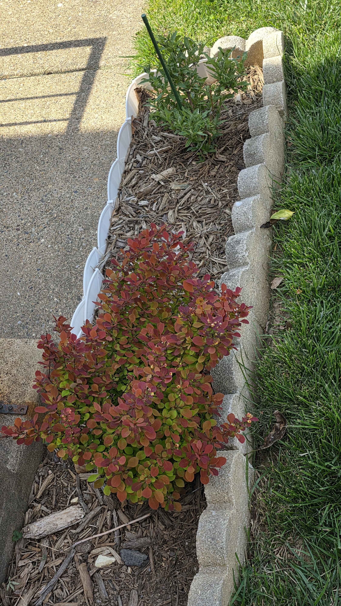

April 19, 2026
Color block in the border
This angle makes the Orange Rocket read less like a single shrub and more like a planted color block running along the edge of the bed. The red-orange foliage is thickening up, the form is still tight and clean, and the whole thing is doing exactly what it should against the pale edging, mulch, and lawn, acting like a hard little line of heat inside a very orderly border.
It doesn't need to be big to be loud. The color is doing all the talking.

- red-orange spring foliage is filling in more densely
- shrub is still holding a tight compact shape
- strong contrast with the pale edging stones and surrounding lawn
- reads as a deliberate color strip along the bed edge